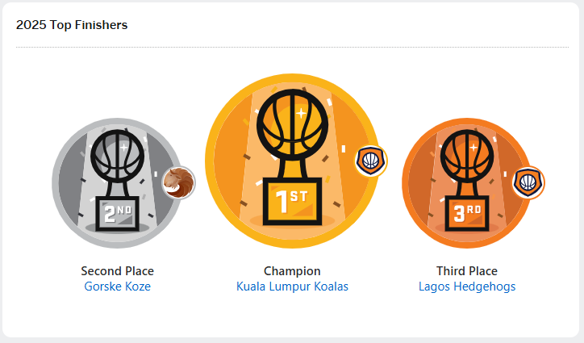
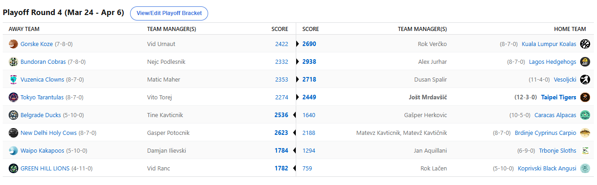
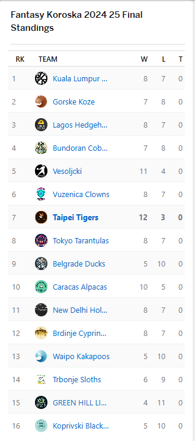

2024/25 - Fantasy Koroška - sezona 8
PLAYOFF Round3 - FINALS (Mar 24 - Apr 6)


Poročilo kroga
Zaključili smo že 8. sezono NBA Fantasy Koroška in kakopak smo dobili še 7. različnega zmagovalca.
To je z ekipo Kuala Lumpur Koalas postal Rok Verčko, ki je na krilih neverjetnega Nikole Jokiča v finalu ugnal Vida Urnauta in bo tako prihodnji vikend
v svojo vitrino za leto dni pospravil najbolj zaželeni kos zlatnine daleč naokoli. Po tem ko je opustošil Dravsko dolino s Kupsom in Maherjem na čelu, se je
začasno prestavil še v SG, kjer je demoliral Jurharja, za konec pa si je pustil še metropolo2390 in v all-Ravne dvoboju ugnal še Cufketa. Bil je Rok sicer
nekoliko oslabljen v tem finalu, Cade je odigral le eno tekmo, nekaj je počival tudi Jokič, a to ni imelo pretirane veze, ko je vseeno zbral 325 točk v 5 tekmah.
Človeška verzija HESOYAM-a pač. Vid je očitno nekje sredi tedna ugotovil, da mu bo nekaj zmanjkalo in se je odločil, da bo 3 acquisitione ter dobrih 100 zelencev
prihranil za naslednjo sezono, zdaj ko končno ve, kje je free agency market. Dobro Vid, vaja dela mojstra in iz napak se učimo. Vseeno si za to sezono zaslužiš vse
čestitke in 75 evričev bo gotovo dober obliž na rane.
V obračunu za tretje mesto je z najvišjim scorom kroga postregel Jurhar, ki se je tako sprehodil mimo Cickona. Slednji je vsaj ostal zvest samemu sebi in zadnje kinte
porabil za Dalana Bantona, kar vsekakor spoštujemo. Aleks je tako 2 zmagama dodal še tretje mesto in se s tem izenačil po kriteriju PodiumPTS z Lužnicom na prvem mestu
all-time rankingov. Cicko je lansko zmago potrdil s 4. mestom in zdaj ko ve, da je Embiid BUST in huge DND, mu bo najbrž lažje ponovno poseči po najvišjih mestih.
V dvoboju FIFA mojstrov je Špalir ugnal Maherja in osvojil 5. mesto. Kljub nekaj poskusom obračun izgubiti, pa je Jole na koncu dokaj gladko poskrbel za Vitonove Tarantele in tako
pristal na končnem 7. mestu.
Osmoljenca Herkona je še enkrat demoliral Tajn in končal kot 9., Geps je utišal že tako zelo tihega Kavtna in zaključil na 11. mestu, Dili je krstno sezono sklenil kot 13., po tem ko je bil
boljši od Kupsa, 9-tedensko natepavanje na 15. mestu pa je kakopak dobil Ranac, ki je tako na zadnje mesto prikoval masterchefa Lačenovskega.
Vsekakor še ena zelo zanimiva sezona, ki pa so jo kot smo zdaj že vajeni ponovno krojile poškodbe in lahko le upamo, da se ta trend v kratkem obrne nazaj v drugo smer, sicer bo vse skupaj
kar nekako izgubilo smisel. Vidimo in slišimo se ponovno v oktobru, kar se tekmovanja tiče seveda, bo pa pred tem sledil še tako težko pričakovani piknik. Hvala vsem za sodelovanje
in uspešne priprave na 9. sezono vam želi LM Jole!
